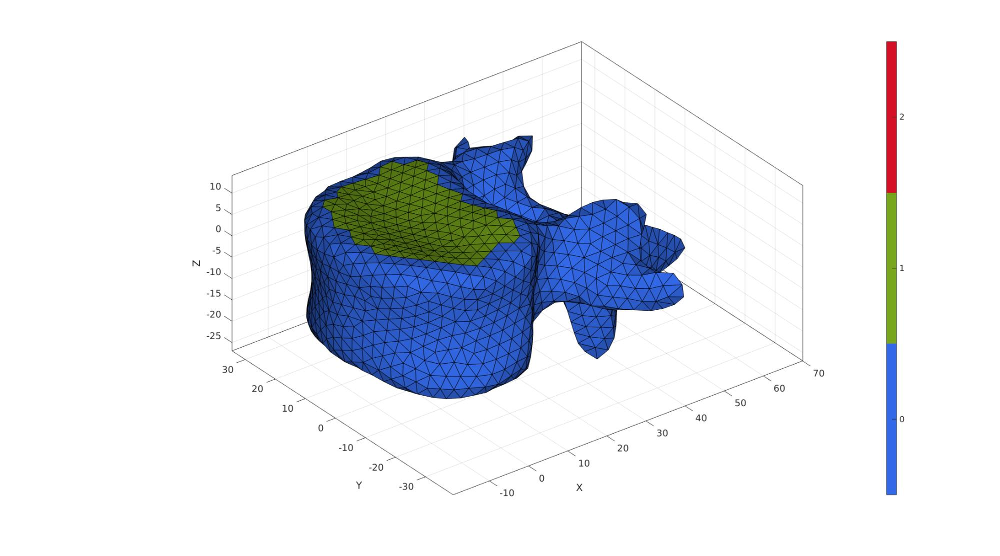
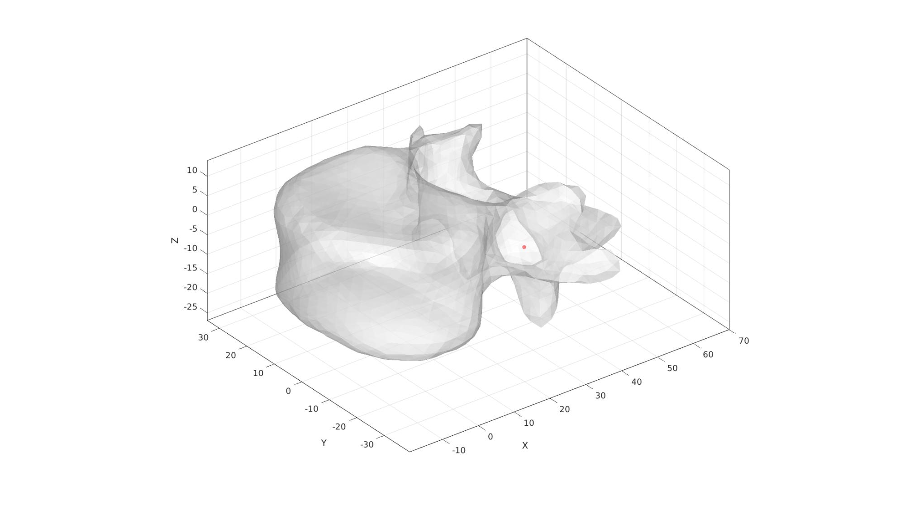
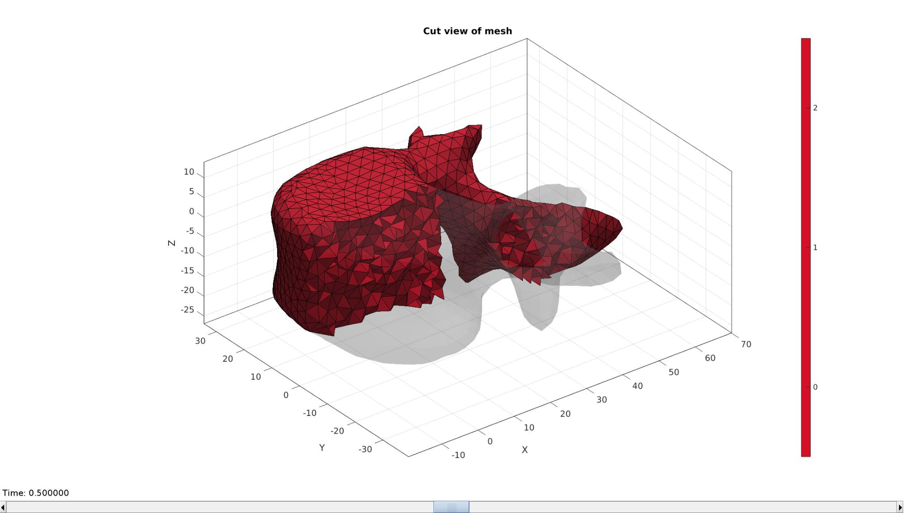
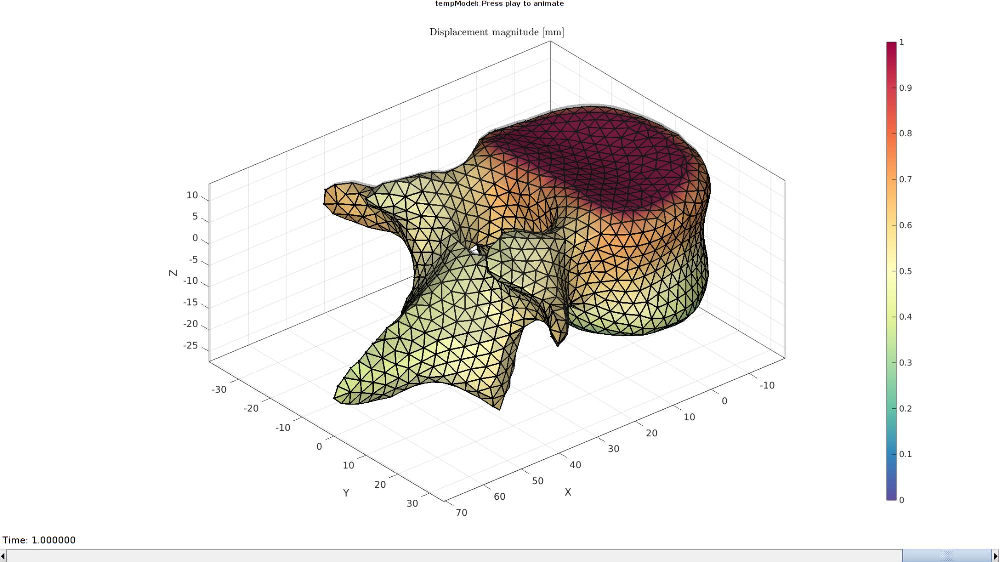
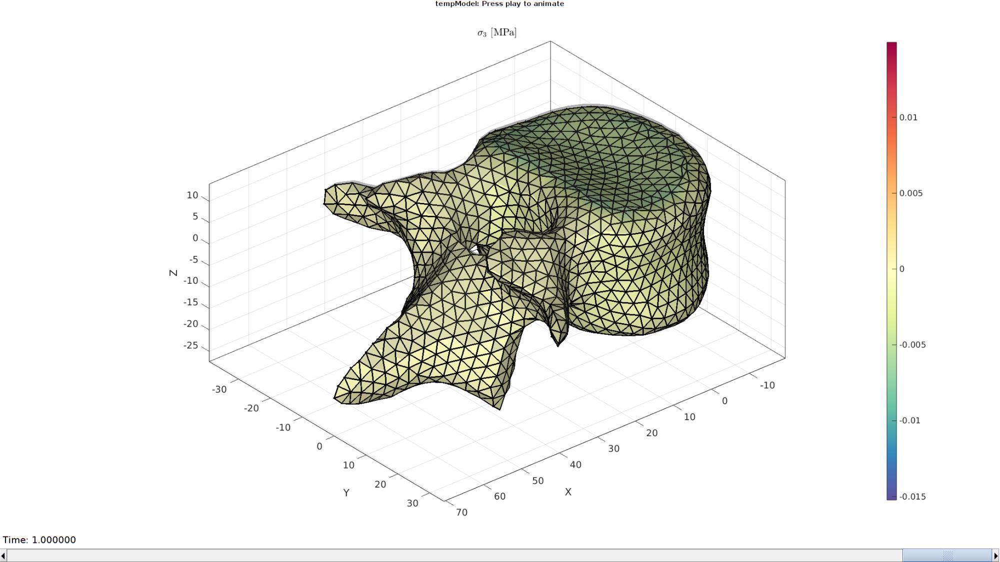

DEMO_febio_0074_vertebrae_compression_01
Below is a demonstration for:
- Building triangulated surface geometry for a spine segment
- Defining the boundary conditions
- Coding the febio structure
- Running the model
- Importing and visualizing results
Contents
Keywords
- febio_spec version 4.0
- febio, FEBio
- spine, vertebra, disc
- contact, sliding, friction
- tetrahedral elements, tet4
- hexahedral elements, hex8
- static, solid
- hyperelastic, Ogden
- displacement logfile
clear; close all; clc;
Plot settings
fontSize=15; faceAlpha1=1; faceAlpha2=0.3; markerSize1=25; markerSize2=10; lineWidth=2; cMap=spectral(250);
Control parameters
% Path names defaultFolder = fileparts(fileparts(mfilename('fullpath'))); savePath=fullfile(defaultFolder,'data','temp'); % Defining file names febioFebFileNamePart='tempModel'; febioFebFileName=fullfile(savePath,[febioFebFileNamePart,'.feb']); %FEB file name febioLogFileName=fullfile(savePath,[febioFebFileNamePart,'.txt']); %FEBio log file name febioLogFileName_disp=[febioFebFileNamePart,'_disp_out.txt']; %Log file name for exporting displacement febioLogFileName_stress=[febioFebFileNamePart,'_stress_out.txt']; %Log file name for exporting stress febioLogFileName_stress_prin=[febioFebFileNamePart,'_stress_prin_out.txt']; %Log file name for exporting principal stress %Geometric parameters pointSpacing=3; %Approximate/desired node spacing volumeFactorDisc=2; %Material parameter set E_youngs1=0.1; %Material Young's modulus MPa nu1=0.4; %Material Poisson's ratio % FEA control settings numTimeSteps=10; %Number of time steps desired max_refs=25; %Max reforms max_ups=0; %Set to zero to use full-Newton iterations opt_iter=6; %Optimum number of iterations max_retries=5; %Maximum number of retires dtmin=(1/numTimeSteps)/100; %Minimum time step size dtmax=1/numTimeSteps; %Maximum time step size runMode='external'; %Boundary condition parameters displacementMagnitude=-1;
Get vertebra bone model
[Fd,Vd]=graphicsModels('vertebra');
rotAngle=-6;
R=euler2DCM([0 (rotAngle./180)*pi 0]);
Vd=Vd*R;
Get vertebra bone model
[Fd,Vd]=graphicsModels('vertebra');
rotAngle=-6;
R=euler2DCM([0 (rotAngle./180)*pi 0]);
Vd=Vd*R;
Remeshing
optionStructRemesh.pointSpacing=pointSpacing; %Set desired point spacing optionStructRemesh.disp_on=1; % Turn off command window text display [Fd,Vd]=ggremesh(Fd,Vd,optionStructRemesh);
%%%%%%%%%%%%%%%%%%%%%%%%%%%%%%%%%%%%%%%%%%%%%%%%%%%%%%%%%%%%%%%%%%%%%%% ------> Geogram/vorpalite for resmeshing <------ 01-May-2023 10:56:54 # Export mesh input file. 01-May-2023 10:56:54 # Run Geomgram/vorpalite. 01-May-2023 10:56:54 ______________________________________________________________________________ | | | o-[config ] Configuration file name:geogram.ini | | Home directory:/home/kevin | | o-[I/O ] Output = /home/kevin/GIBBON/data/temp/temp_out.obj | | Loading file /home/kevin/GIBBON/data/temp/temp.obj... | | (FP64) nb_v:7500 nb_e:0 nb_f:15000 nb_b:0 tri:1 dim:3 | | Attributes on vertices: point[3] | | o-[Load ] Elapsed time: 0 s | ___________________________ _/ =====[preprocessing]===== \________________________________________________ | | | o-[CmdLine ] using pre:epsilon=0(0%) | | using pre:max_hole_area=100 | | using pre:min_comp_area=369.182(3%) | | o-[Components ] Nb connected components=1 | | Mesh does not have small connected component (good) | | o-[Validate ] Mesh does not have 0-area facets (good) | | o-[CmdLine ] using pre:margin=0(0%) | | o-[Pre ] Elapsed time: 0 s | _______________________ _/ =====[remeshing]===== \____________________________________________________ | | ||| o-[Newton ] Elapsed time: 0.08s | | o-[Remesh ] Computing RVD... | | o-[Validate ] (FP64) nb_v:1580 nb_e:0 nb_f:3160 nb_b:0 tri:1 dim:3 | | Attributes on vertices: point[3] | | o-[Remesh ] Elapsed time: 0.24 s | ____________________________ _/ =====[postprocessing]===== \_______________________________________________ | | | o-[CmdLine ] using post:min_comp_area=369.659(3%) | | o-[Components ] Nb connected components=1 | | Mesh does not have small connected component (good) | | o-[CmdLine ] using post:max_hole_area=100 | | using post:max_deg3_dist=0.122828(0.10000000000000001%) | | o-[Degree3 ] Does not have any degree 3 vertex (good) | | o-[Post ] Elapsed time: 0 s | ____________________ _/ =====[result]===== \_______________________________________________________ | | | o-[FinalMesh ] (FP64) nb_v:1580 nb_e:0 nb_f:3160 nb_b:0 tri:1 dim:3 | | Attributes on vertices: point[3] | | o-[I/O ] Saving file /home/kevin/GIBBON/data/temp/temp_out.obj... | | o-[Total time ] Elapsed time: 0.28 s | \______________________________________________________________________________/ # Importing remeshed geometry. 01-May-2023 10:56:54 # Removing temporary files. 01-May-2023 10:56:54 # Done! 01-May-2023 10:56:54
Find top and bottom surface
The below is a very basic hardcoded approach to finding (approximately) the top and bottom surfaces where the intevertebral discs would attached to the vertebra. The "detection" is based on the angle elements face with respect to the z-axis, and the distance from the origin (which lies in the middle in terms of the z-direction and in the centre of the disc attachement area in terms of the xy-direction).
angularThreshold=(25/180)*pi; distanceThreshold=26; VdF=patchCentre(Fd,Vd); N=patchNormal(Fd,Vd); nz=[0 0 1]; a=acos(dot(N,nz(ones(size(N,1),1),:),2)); D = sqrt(sum(VdF(:,[1 2]).^2,2)); logicTop = D<distanceThreshold & a<angularThreshold; indNotInLogic = unique(Fd(~logicTop,:)); logicTop = logicTop & ~any(ismember(Fd,indNotInLogic),2); logicTop = triSurfLogicSharpFix(Fd,logicTop,3); D = sqrt(sum(VdF(:,[1 2]).^2,2)); logicBottom = D<distanceThreshold & a>(pi-angularThreshold); indNotInLogic = unique(Fd(~logicBottom,:)); logicBottom = logicBottom & ~any(ismember(Fd,indNotInLogic),2); logicBottom = triSurfLogicSharpFix(Fd,logicBottom,3); Cd=zeros(size(Fd,1),1); Cd(logicTop)=1; Cd(logicBottom)=2;
Eb1=patchBoundary(Fd(Cd==1,:)); indList1=edgeListToCurve(Eb1); indList1=indList1(1:end-1); Eb2=patchBoundary(Fd(Cd==2,:)); indList2=edgeListToCurve(Eb2); indList2=indList2(1:end-1);
n=[numel(indList1) numel(indList2)]; [nMax,indMax]=max(n); nn=abs(diff(n)); switch indMax case 1 [Fd,Vd,Eb2,Cd]=triSurfSplitBoundary(Fd,Vd,Eb2,size(Eb2,1)+nn,Cd); indList2=edgeListToCurve(Eb2); indList2=indList2(1:end-1); case 2 [Fd,Vd,Eb1,Cd]=triSurfSplitBoundary(Fd,Vd,Eb1,size(Eb1,1)+nn,Cd); indList1=edgeListToCurve(Eb1); indList1=indList1(1:end-1); end
cFigure; hold on; gpatch(Fd,Vd,Cd,'k',1); axisGeom(gca,fontSize); colormap gjet; icolorbar; camlight('headlight'); gdrawnow;
nc=10; ns=50; [Vd]=smoothCurve(Fd,Vd,nc,ns,indList1); [Vd]=smoothCurve(Fd,Vd,nc,ns,indList2);
cFigure; hold on; gpatch(Fd,Vd,Cd,'k',1); % patchNormPlot(F1,V1) plotV(Vd(indList1,:),'r.-','MarkerSize',25,'LineWidth',3); plotV(Vd(indList2,:),'r.-','MarkerSize',25,'LineWidth',3); plotV(Vd(indList1(1:2),:),'y.','MarkerSize',35); plotV(Vd(indList2(1:2),:),'y.','MarkerSize',35); axisGeom(gca,fontSize); colormap gjet; icolorbar; camlight('headlight'); gdrawnow;
Define region points
[V_region]=getInnerPoint(Fd,Vd);
cFigure; hold on; gpatch(Fd,Vd,'w','none',0.5); plotV(V_region,'r.','markerSize',25); axisGeom(gca,fontSize); camlight('headlight'); gdrawnow;
Mesh using tetgen
inputStruct.stringOpt='-pq1.2AaY'; %TetGen option string inputStruct.Faces=Fd; %The faces inputStruct.Nodes=Vd; %The vertices inputStruct.holePoints=[]; %The hole interior points inputStruct.faceBoundaryMarker=Cd; %Face boundary markers inputStruct.regionPoints=V_region; %The region interior points inputStruct.regionA=tetVolMeanEst(Fd,Vd)*volumeFactorDisc; %Volume for regular tets
Mesh model using tetrahedral elements using tetGen
[meshOutput]=runTetGen(inputStruct); %Run tetGen
%%%%%%%%%%%%%%%%%%%%%%%%%%%%%%%%%%%%%%%%%%%%% --- TETGEN Tetrahedral meshing --- 01-May-2023 10:57:00 %%%%%%%%%%%%%%%%%%%%%%%%%%%%%%%%%%%%%%%%%%%%% --- Writing SMESH file --- 01-May-2023 10:57:00 ----> Adding node field ----> Adding facet field ----> Adding holes specification ----> Adding region specification --- Done --- 01-May-2023 10:57:00 --- Running TetGen to mesh input boundary--- 01-May-2023 10:57:00 Opening /home/kevin/GIBBON/data/temp/temp.smesh. Delaunizing vertices... Delaunay seconds: 0.004296 Creating surface mesh ... Surface mesh seconds: 0.001219 Recovering boundaries... Boundary recovery seconds: 0.002119 Removing exterior tetrahedra ... Spreading region attributes. Exterior tets removal seconds: 0.001387 Recovering Delaunayness... Delaunay recovery seconds: 0.001009 Refining mesh... Refinement seconds: 0.02213 Smoothing vertices... Mesh smoothing seconds: 0.041555 Improving mesh... Mesh improvement seconds: 0.001754 Writing /home/kevin/GIBBON/data/temp/temp.1.node. Writing /home/kevin/GIBBON/data/temp/temp.1.ele. Writing /home/kevin/GIBBON/data/temp/temp.1.face. Writing /home/kevin/GIBBON/data/temp/temp.1.edge. Output seconds: 0.007945 Total running seconds: 0.083509 Statistics: Input points: 1584 Input facets: 3168 Input segments: 4752 Input holes: 0 Input regions: 1 Mesh points: 3561 Mesh tetrahedra: 16716 Mesh faces: 35016 Mesh faces on exterior boundary: 3168 Mesh faces on input facets: 3168 Mesh edges on input segments: 4752 Steiner points inside domain: 1977 --- Done --- 01-May-2023 10:57:00 %%%%%%%%%%%%%%%%%%%%%%%%%%%%%%%%%%%%%%%%%%%%% --- Importing TetGen files --- 01-May-2023 10:57:00 --- Done --- 01-May-2023 10:57:00
Access model element and patch data
Fb=meshOutput.facesBoundary; %Boundary faces of the disc Cb=meshOutput.boundaryMarker; %Boundary marker/color data for the disc V=meshOutput.nodes; %The vertices/nodes E=meshOutput.elements; %The tet4 elements
Visualizing mesh using meshView, see also anim8
meshView(meshOutput);
Define boundary conditions
logicTopFaces= (Cb==1); logicBottomFaces= (Cb==2); bcPrescribeList=unique(Fb(logicTopFaces,:)); bcSupportList=unique(Fb(logicBottomFaces,:));
Visualize BC's
cFigure; hold on; title('Boundary conditions'); hp(1)=gpatch(Fb,V,'w','none',0.5); hp(2)=plotV(V(bcSupportList,:),'k.','MarkerSize',25); hp(3)=plotV(V(bcPrescribeList,:),'r.','MarkerSize',25); legend(hp,{'Disc','Constrained nodes','Applied displacement nodes'}); axisGeom; camlight headlight; gdrawnow;

Defining the FEBio input structure
See also febioStructTemplate and febioStruct2xml and the FEBio user manual.
%Get a template with default settings [febio_spec]=febioStructTemplate; %febio_spec version febio_spec.ATTR.version='4.0'; %Module section febio_spec.Module.ATTR.type='solid'; %Control section febio_spec.Control.analysis='STATIC'; febio_spec.Control.time_steps=numTimeSteps; febio_spec.Control.step_size=1/numTimeSteps; febio_spec.Control.solver.max_refs=max_refs; febio_spec.Control.solver.qn_method.max_ups=max_ups; febio_spec.Control.time_stepper.dtmin=dtmin; febio_spec.Control.time_stepper.dtmax=dtmax; febio_spec.Control.time_stepper.max_retries=max_retries; febio_spec.Control.time_stepper.opt_iter=opt_iter; %Material section materialName1='Material1'; febio_spec.Material.material{1}.ATTR.name=materialName1; febio_spec.Material.material{1}.ATTR.type='neo-Hookean'; febio_spec.Material.material{1}.ATTR.id=1; febio_spec.Material.material{1}.E=E_youngs1; febio_spec.Material.material{1}.v=nu1; % Mesh section % -> Nodes febio_spec.Mesh.Nodes{1}.ATTR.name='Object1'; %The node set name febio_spec.Mesh.Nodes{1}.node.ATTR.id=(1:size(V,1))'; %The node id's febio_spec.Mesh.Nodes{1}.node.VAL=V; %The nodel coordinates % -> Elements partName1='Part1'; febio_spec.Mesh.Elements{1}.ATTR.name=partName1; %Name of this part febio_spec.Mesh.Elements{1}.ATTR.type='tet4'; %Element type febio_spec.Mesh.Elements{1}.elem.ATTR.id=(1:1:size(E,1))'; %Element id's febio_spec.Mesh.Elements{1}.elem.VAL=E; %The element matrix % -> NodeSets nodeSetName1='bcSupportList'; nodeSetName2='bcPrescribeList'; febio_spec.Mesh.NodeSet{1}.ATTR.name=nodeSetName1; febio_spec.Mesh.NodeSet{1}.VAL=mrow(bcSupportList); febio_spec.Mesh.NodeSet{2}.ATTR.name=nodeSetName2; febio_spec.Mesh.NodeSet{2}.VAL=mrow(bcPrescribeList); %MeshDomains section febio_spec.MeshDomains.SolidDomain.ATTR.name=partName1; febio_spec.MeshDomains.SolidDomain.ATTR.mat=materialName1; %Boundary condition section % -> Fix boundary conditions febio_spec.Boundary.bc{1}.ATTR.name='zero_displacement_xyz'; febio_spec.Boundary.bc{1}.ATTR.type='zero displacement'; febio_spec.Boundary.bc{1}.ATTR.node_set=nodeSetName1; febio_spec.Boundary.bc{1}.x_dof=1; febio_spec.Boundary.bc{1}.y_dof=1; febio_spec.Boundary.bc{1}.z_dof=1; febio_spec.Boundary.bc{2}.ATTR.name='zero_displacement_xy'; febio_spec.Boundary.bc{2}.ATTR.type='zero displacement'; febio_spec.Boundary.bc{2}.ATTR.node_set=nodeSetName2; febio_spec.Boundary.bc{2}.x_dof=1; febio_spec.Boundary.bc{2}.y_dof=1; febio_spec.Boundary.bc{2}.z_dof=0; febio_spec.Boundary.bc{3}.ATTR.name='prescibed_displacement_z'; febio_spec.Boundary.bc{3}.ATTR.type='prescribed displacement'; febio_spec.Boundary.bc{3}.ATTR.node_set=nodeSetName2; febio_spec.Boundary.bc{3}.dof='z'; febio_spec.Boundary.bc{3}.value.ATTR.lc=1; febio_spec.Boundary.bc{3}.value.VAL=displacementMagnitude; febio_spec.Boundary.bc{3}.relative=0; %LoadData section % -> load_controller febio_spec.LoadData.load_controller{1}.ATTR.id=1; febio_spec.LoadData.load_controller{1}.ATTR.type='loadcurve'; febio_spec.LoadData.load_controller{1}.interpolate='LINEAR'; febio_spec.LoadData.load_controller{1}.points.point.VAL=[0 0; 1 1]; %Output section % -> log file febio_spec.Output.logfile.ATTR.file=febioLogFileName; febio_spec.Output.logfile.node_data{1}.ATTR.file=febioLogFileName_disp; febio_spec.Output.logfile.node_data{1}.ATTR.data='ux;uy;uz'; febio_spec.Output.logfile.node_data{1}.ATTR.delim=','; febio_spec.Output.logfile.element_data{1}.ATTR.file=febioLogFileName_stress; febio_spec.Output.logfile.element_data{1}.ATTR.data='sz'; febio_spec.Output.logfile.element_data{1}.ATTR.delim=','; febio_spec.Output.logfile.element_data{2}.ATTR.file=febioLogFileName_stress_prin; febio_spec.Output.logfile.element_data{2}.ATTR.data='s1;s2;s3'; febio_spec.Output.logfile.element_data{2}.ATTR.delim=','; % Plotfile section febio_spec.Output.plotfile.compression=0;
Quick viewing of the FEBio input file structure
The febView function can be used to view the xml structure in a MATLAB figure window.
febView(febio_spec); %Viewing the febio file
Exporting the FEBio input file
Exporting the febio_spec structure to an FEBio input file is done using the febioStruct2xml function.
febioStruct2xml(febio_spec,febioFebFileName); %Exporting to file and domNode %system(['gedit ',febioFebFileName,' &']);
Running the FEBio analysis
To run the analysis defined by the created FEBio input file the runMonitorFEBio function is used. The input for this function is a structure defining job settings e.g. the FEBio input file name. The optional output runFlag informs the user if the analysis was run succesfully.
febioAnalysis.run_filename=febioFebFileName; %The input file name febioAnalysis.run_logname=febioLogFileName; %The name for the log file febioAnalysis.disp_on=1; %Display information on the command window febioAnalysis.runMode=runMode; febioAnalysis.maxLogCheckTime=10; %Max log file checking time [runFlag]=runMonitorFEBio(febioAnalysis);%START FEBio NOW!!!!!!!!
%%%%%%%%%%%%%%%%%%%%%%%%%%%%%%%%%%%%%%%%%%%%%%%%%%%%%%%%%%%%%%%%%%%%%%%%%%%
--------> RUNNING/MONITORING FEBIO JOB <-------- 01-May-2023 10:57:04
FEBio path: /home/kevin/FEBioStudio/bin/febio4
# Attempt removal of existing log files 01-May-2023 10:57:04
* Removal succesful 01-May-2023 10:57:04
# Attempt removal of existing .xplt files 01-May-2023 10:57:04
* Removal succesful 01-May-2023 10:57:04
# Starting FEBio... 01-May-2023 10:57:04
Max. total analysis time is: Inf s
* Waiting for log file creation 01-May-2023 10:57:04
Max. wait time: 10 s
* Log file found. 01-May-2023 10:57:04
# Parsing log file... 01-May-2023 10:57:04
number of iterations : 3 01-May-2023 10:57:05
number of reformations : 3 01-May-2023 10:57:05
------- converged at time : 0.1 01-May-2023 10:57:05
number of iterations : 3 01-May-2023 10:57:05
number of reformations : 3 01-May-2023 10:57:05
------- converged at time : 0.2 01-May-2023 10:57:05
number of iterations : 3 01-May-2023 10:57:05
number of reformations : 3 01-May-2023 10:57:05
------- converged at time : 0.3 01-May-2023 10:57:05
number of iterations : 3 01-May-2023 10:57:05
number of reformations : 3 01-May-2023 10:57:05
------- converged at time : 0.4 01-May-2023 10:57:05
number of iterations : 3 01-May-2023 10:57:06
number of reformations : 3 01-May-2023 10:57:06
------- converged at time : 0.5 01-May-2023 10:57:06
number of iterations : 3 01-May-2023 10:57:06
number of reformations : 3 01-May-2023 10:57:06
------- converged at time : 0.6 01-May-2023 10:57:06
number of iterations : 3 01-May-2023 10:57:06
number of reformations : 3 01-May-2023 10:57:06
------- converged at time : 0.7 01-May-2023 10:57:06
number of iterations : 3 01-May-2023 10:57:06
number of reformations : 3 01-May-2023 10:57:06
------- converged at time : 0.8 01-May-2023 10:57:06
number of iterations : 3 01-May-2023 10:57:06
number of reformations : 3 01-May-2023 10:57:06
------- converged at time : 0.9 01-May-2023 10:57:06
number of iterations : 3 01-May-2023 10:57:07
number of reformations : 3 01-May-2023 10:57:07
------- converged at time : 1 01-May-2023 10:57:07
Elapsed time : 0:00:02 01-May-2023 10:57:07
N O R M A L T E R M I N A T I O N
# Done 01-May-2023 10:57:07
%%%%%%%%%%%%%%%%%%%%%%%%%%%%%%%%%%%%%%%%%%%%%%%%%%%%%%%%%%%%%%%%%%%%%%%%%%%
Import FEBio results
if runFlag==1 %i.e. a succesful run
Importing nodal displacements from a log file
dataStruct=importFEBio_logfile(fullfile(savePath,febioLogFileName_disp),0,1);
%Access data
N_disp_mat=dataStruct.data; %Displacement
timeVec=dataStruct.time; %Time
%Create deformed coordinate set
V_DEF=N_disp_mat+repmat(V,[1 1 size(N_disp_mat,3)]);
Plotting the simulated results using anim8 to visualize and animate deformations
DN_magnitude=sqrt(sum(N_disp_mat(:,:,end).^2,2)); %Current displacement magnitude % Create basic view and store graphics handle to initiate animation hf=cFigure; %Open figure gtitle([febioFebFileNamePart,': Press play to animate']); title('Displacement magnitude [mm]','Interpreter','Latex') hp=gpatch(Fb,V_DEF(:,:,end),DN_magnitude,'k',1,2); %Add graphics object to animate hp.Marker='.'; hp.MarkerSize=markerSize2; hp.FaceColor='interp'; gpatch(Fb,V,0.5*ones(1,3),'none',0.25); %A static graphics object axisGeom(gca,fontSize); colormap(cMap); colorbar; caxis([0 max(DN_magnitude)]); caxis manual; axis(axisLim(V_DEF)); %Set axis limits statically view(140,30); camlight headlight; % Set up animation features animStruct.Time=timeVec; %The time vector for qt=1:1:size(N_disp_mat,3) %Loop over time increments DN_magnitude=sqrt(sum(N_disp_mat(:,:,qt).^2,2)); %Current displacement magnitude %Set entries in animation structure animStruct.Handles{qt}=[hp hp]; %Handles of objects to animate animStruct.Props{qt}={'Vertices','CData'}; %Properties of objects to animate animStruct.Set{qt}={V_DEF(:,:,qt),DN_magnitude}; %Property values for to set in order to animate end anim8(hf,animStruct); %Initiate animation feature drawnow;
Importing element stress from a log file
dataStruct=importFEBio_logfile(fullfile(savePath,febioLogFileName_stress_prin),0,1);
%Access data
E_stress_mat=dataStruct.data(:,3,:);
Plotting the simulated results using anim8 to visualize and animate deformations
[CV]=faceToVertexMeasure(E,V,E_stress_mat(:,:,end));
% Create basic view and store graphics handle to initiate animation
hf=cFigure; %Open figure /usr/local/MATLAB/R2020a/bin/glnxa64/jcef_helper: symbol lookup error: /lib/x86_64-linux-gnu/libpango-1.0.so.0: undefined symbol: g_ptr_array_copy
gtitle([febioFebFileNamePart,': Press play to animate']);
title('$\sigma_{3}$ [MPa]','Interpreter','Latex')
hp=gpatch(Fb,V_DEF(:,:,end),CV,'k',1,2); %Add graphics object to animate
hp.Marker='.';
hp.MarkerSize=markerSize2;
hp.FaceColor='interp';
gpatch(Fb,V,0.5*ones(1,3),'none',0.25); %A static graphics object
axisGeom(gca,fontSize);
colormap(cMap); colorbar;
caxis([min(E_stress_mat(:)) max(E_stress_mat(:))]);
axis(axisLim(V_DEF)); %Set axis limits statically
view(140,30);
camlight headlight;
% Set up animation features
animStruct.Time=timeVec; %The time vector
for qt=1:1:size(N_disp_mat,3) %Loop over time increments
[CV]=faceToVertexMeasure(E,V,E_stress_mat(:,:,qt));
%Set entries in animation structure
animStruct.Handles{qt}=[hp hp]; %Handles of objects to animate
animStruct.Props{qt}={'Vertices','CData'}; %Properties of objects to animate
animStruct.Set{qt}={V_DEF(:,:,qt),CV}; %Property values for to set in order to animate
end
anim8(hf,animStruct); %Initiate animation feature
drawnow;
 end
function [V1]=smoothCurve(F1,V1,nc,ns,indList1) clear cPar cPar.n=nc; cPar.Method='HC'; e=[(1:numel(indList1))' [(2:numel(indList1))';1]]; v=V1(indList1,:); [v]=patchSmooth(e,v,[],cPar); V1(indList1,:)=v; indTouch=unique(F1(any(ismember(F1,indList1),2),:)); indTouch=unique(F1(any(ismember(F1,indTouch),2),:)); logicRigid=true(size(V1,1),1); logicRigid(indTouch)=0; logicRigid(indList1)=1; indRigid=find(logicRigid); cPar.n=ns; cPar.Method='HC'; cPar.RigidConstraints=indRigid; [V1]=patchSmooth(F1,V1,[],cPar); end

GIBBON www.gibboncode.org
Kevin Mattheus Moerman, gibbon.toolbox@gmail.com
GIBBON footer text
License: https://github.com/gibbonCode/GIBBON/blob/master/LICENSE
GIBBON: The Geometry and Image-based Bioengineering add-On. A toolbox for image segmentation, image-based modeling, meshing, and finite element analysis.
Copyright (C) 2006-2022 Kevin Mattheus Moerman and the GIBBON contributors
This program is free software: you can redistribute it and/or modify it under the terms of the GNU General Public License as published by the Free Software Foundation, either version 3 of the License, or (at your option) any later version.
This program is distributed in the hope that it will be useful, but WITHOUT ANY WARRANTY; without even the implied warranty of MERCHANTABILITY or FITNESS FOR A PARTICULAR PURPOSE. See the GNU General Public License for more details.
You should have received a copy of the GNU General Public License along with this program. If not, see http://www.gnu.org/licenses/.